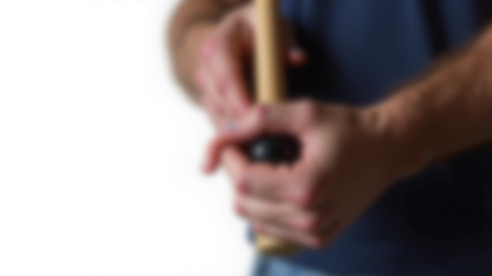
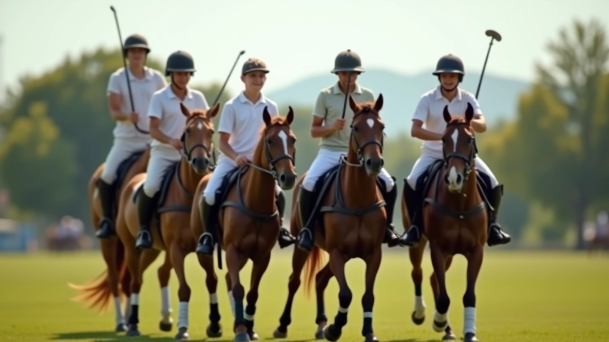

تقنيات المسك الصحيح للعصا والكرة
تعرف على الطريقة الصحيحة لمسك عصا البولو والتحكم بالكرة بدقة. نصائح عملية من المحترفين.
اقرأ المزيدتعلم الحركات الأساسية التي تحتاجها للبدء في لعبة البولو. شرح مفصل لكل حركة مع تمارين لممارستها يومياً.

البولو ليست لعبة معقدة كما تبدو. الحقيقة أن معظم اللاعبين الجدد يركزون على السرعة والقوة في البداية، لكن الأساسيات هي ما يحدث الفارق الحقيقي. عندما تتقن الحركات الصحيحة — التوازن على الحصان، قبضة العصا، حركة الكتف — كل شيء آخر يصبح أسهل.
نحن هنا لنقدم لك شرحاً واضحاً لكل حركة من الحركات الأساسية. لا معقدات، لا فني زائد. فقط ما تحتاج إليه حقاً للبدء في الملعب بثقة.
الأساس الذي يقف عليه كل شيء آخر في اللعبة
كيفية إمساك العصا للتحكم الأفضل
العمل المنسق بين جسمك والحصان
كل شيء يبدأ من هنا. التوازن على الحصان ليس عن الجلوس بقوة، بل عن توزيع وزنك بشكل متساوٍ. ستلاحظ أن لاعبي البولو المحترفين لديهم قوة أساسية قوية جداً — وهذا ليس مصادفة.
الوقفة الصحيحة تعني:
في البداية، ستشعر أن هذا غريب. لكن بعد بضعة أسابيع من التدريب المنتظم — ثلاث جلسات أسبوعياً لمدة ٩٠ دقيقة — ستصبح الوقفة الصحيحة طبيعية تماماً.

القبضة الصحيحة على عصا البولو هي كل شيء. إذا كانت قبضتك خاطئة، فإن كل حركة أخرى ستكون صعبة. المقبض يجب أن يكون طبيعياً — لا تضغط بقوة شديدة، لا تتركه فضفاضاً.
الحركات الأساسية الثلاث التي يجب أن تتقنها أولاً هي: الضربة الأمامية، الضربة الخلفية، والضربة الجانبية. كل حركة تحتاج إلى ممارسة يومية. لا تتوقع أن تتقنها في أسبوع واحد — عادة ما يستغرق الأمر حوالي ثلاثة إلى أربعة أسابيع حتى تشعر بالراحة.

كاتب المقال
فريق المحتوى التحريري
أعده فريق نادي الفرسان التحريري، متخصص في تقديم إرشادات عملية وسهلة المتابعة عن البولو والتدريبات الجماعية.
هذا المقال يقدم معلومات تعليمية عن الحركات الأساسية في البولو. النتائج والتطور يختلفان من شخص لآخر حسب الممارسة المنتظمة والتدريب الفعلي. يُنصح دائماً بالتدرب تحت إشراف مدرب مؤهل وبارتداء معدات الحماية المناسبة. قبل بدء أي برنامج تدريبي جديد، تأكد من أنك في حالة صحية جيدة.
لا تكفي المعرفة النظرية وحدها. التدريب العملي هو ما يحسّن مهاراتك فعلياً. إليك تمارين يمكنك ممارستها ثلاث مرات أسبوعياً:
ابدأ بركوب الحصان في خط مستقيم ببطء. ركز على الشعور بالحصان تحتك. حاول الوقوف ببطء (بعض الحركة) مع الحفاظ على التوازن. هذا يعزز قوة أساسك وثقتك.
ضع كرات على الأرض بمسافات منتظمة. اركب ببطء وحاول ضرب كل كرة بالعصا. ركز على القبضة والحركة، لا على القوة. النقاء أهم من السرعة في هذه المرحلة.
اركب في أشكال معينة (مثل الأرقام أو المربعات). هذا يعلمك كيفية توازن جسمك عند تغيير الاتجاه مع الحصان.

الحركات الأساسية في البولو ليست معقدة، لكنها تحتاج إلى ممارسة منتظمة. لا تتوقع الكمال من اليوم الأول. كل لاعب مشهور بدأ بنفس الخطوات البسيطة التي نتحدث عنها هنا.
المهم هو أن تبدأ الآن. اختر يوماً هذا الأسبوع وابدأ بممارسة الوقفة الصحيحة والقبضة. بعد أسبوعين من التدريب المنتظم، ستشعر بالفارق. وبعد شهر، ستكون مستعداً للتقدم إلى حركات أكثر تعقيداً.
تذكر: البولو رياضة ممتعة قبل كل شيء. لا تضغط على نفسك كثيراً. استمتع بالعملية، تعلم من أخطائك، وسترى كيف يتحسن أدائك بسرعة.
هل تريد تعمق أكثر في تقنيات البولو؟ اطلع على مقالاتنا الأخرى عن التدريبات المتقدمة والاستراتيجيات.
اكتشف المزيدتعمق أكثر في أساسيات البولو والتدريبات الجماعية
تعرف على الطريقة الصحيحة لمسك عصا البولو والتحكم بالكرة بدقة. نصائح عملية من المحترفين.
اقرأ المزيد
اكتشف أفضل التمارين لتحسين التنسيق بين أعضاء الفريق. تمارين مثبتة تعزز التواصل والعمل المنسق.
اقرأ المزيد
افهم الاستراتيجيات الأساسية للعبة والمواقع التكتيكية على الملعب. نصائح لاتخاذ القرارات الصحيحة.
اقرأ المزيد